Ние сме семейство Домбазян, членове сме на ЦАСД село Медово. Мотивирани от Библията и Духът на пророчеството, напуснахме големия град и с много молитви и Божията милост изградихме си дом и много скоро Бог ни мотивира да градим училище. С помощта на Бог и много братя и сестри продължаваме да работим за спасението на децата ни.
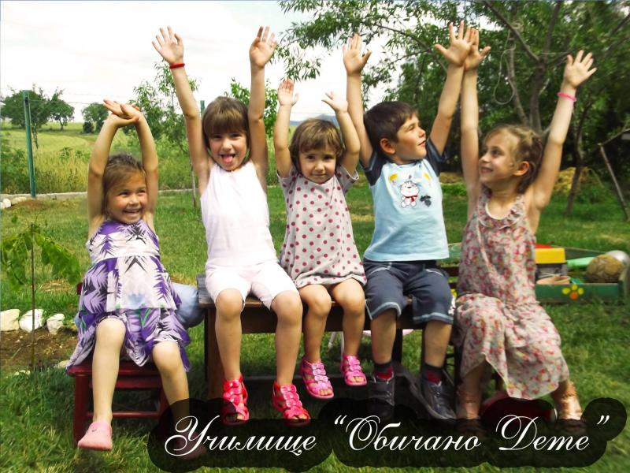
Училище "Обичано дете"
Добре дошли в интернет страницата на училище "Обичано дете"!
Нашата цел
Нашата цел е хармонията и красотата в природата да се предаде и в отношенията между учениците и техните учители.
Мечтаем в сътрудничество с родителите да постигнем най-трудната, но и най-важна задача, възложена някога на човека –
да образова и възпитава подрастващите на ценности, така че те са станат полезни членове на обществото.
Да станат млади хора, обичащи доброто, морала и чистотата; които уважават възрастните и помагат на нуждаещите се.
Ние искаме да ги научим не само да четат и да пишат, но и да обичат - както са били обичани от родители, учители и съученици.
Да се реализират в живота - откривайки пътища до човешките сърца и дарявайки любовта, с която те самите са били изпълнени.
Това ще е мисията на училище "Обичано дете".
Проектът
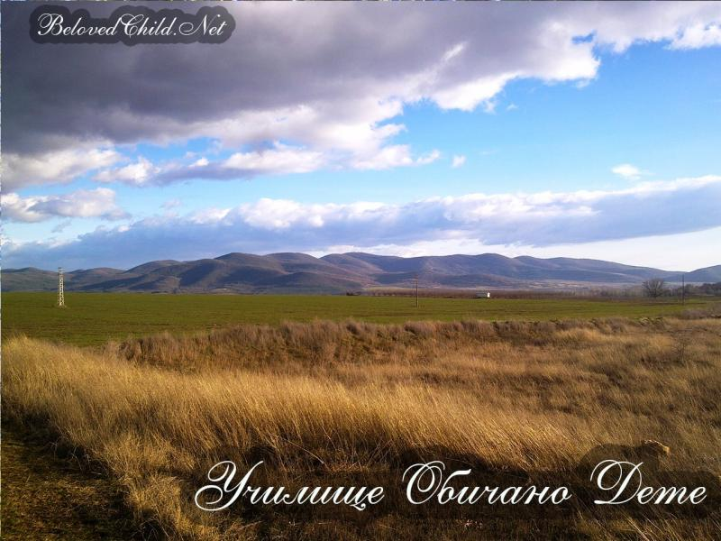
Мястото
Намира се в прекрасна местност в покрайнините на китното селце Медово в полите на Средна гора. На 50 км североизточно от град Пловдив и 60 км западно от град Стара Загора - далеч от мръсния градски въздух, от шума и от стреса на забързаното ежедневие.
"Излезте от големите градове по възможност по-бързо. Открийте църковни училища."
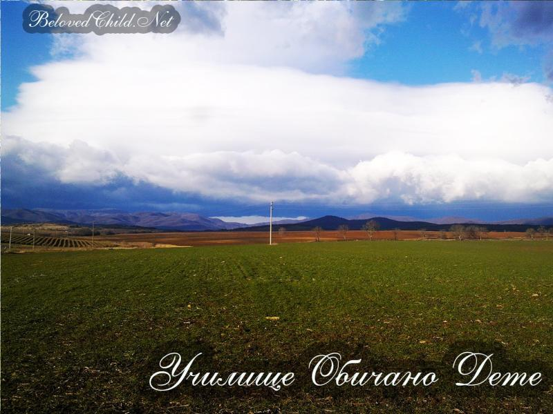
Природата
Заобиколен от хълмистия простор на Средна гора - в четирите посоки се виждат планини, хълмове и гори, поточета, поля. Прекрасна панорама, тишина, чист въздух. Ще има алеи с цветя и декоративни дръвчета - чисто и красиво! Децата обичат животните, затова ние ще се погрижим в специален, обезопасен зоо-кът да могат да изградят приятелска връзка с тях.
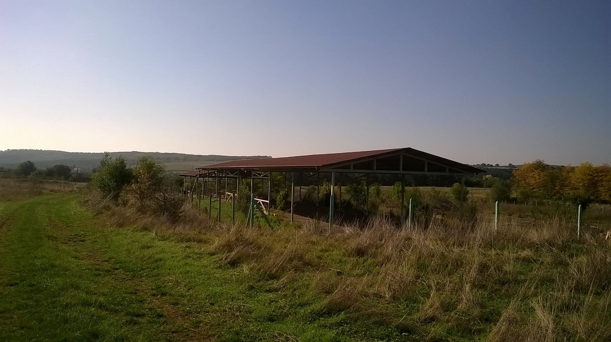
Сградата
Училището разполага със собственост от 7000 кв. м. площ. Ще има собствена овощна и зеленчукова градини, зоокът и пчелин. Сградата ще е на един етаж с площ 500 кв. м. - проектирана според съответните изисквания. В нея ще има 5 класни стаи, 2 стаи за почивка, физкултурен салон, столова, учителска стая, директорски и лекарски кабинети.
Обучението
Частно целодневно общообразователно училище „Обичано дете“ ще стартира като начално училище, с перспектива в бъдеще да стане до осми клас.
Капацитетът на училището е 40 деца - от предучилищна група до четвърти клас - по осем деца в клас за по-ефективно обучение.
Ще се изучава Библията, учебните часове ще започват с молитва, а учителите ще бъдат адвентисти от седмия ден.
Училището ще предлага засилено изучаване на английски език, компютърна грамотност, както и възможности за развиване на музикалните таланти.
"Дайте на децата си Божието слово като основа на образованието им."

Програмата
Учебните занятия ще се провеждат сутрин, а в следобедните часове ще има занималня. Като свободно избираеми дисциплини ще бъдат осигурени кръжоци по готварство, шев и кройка, природолечение и здравословен начин на живот, градинарство, овощарство, пчеларство и други.
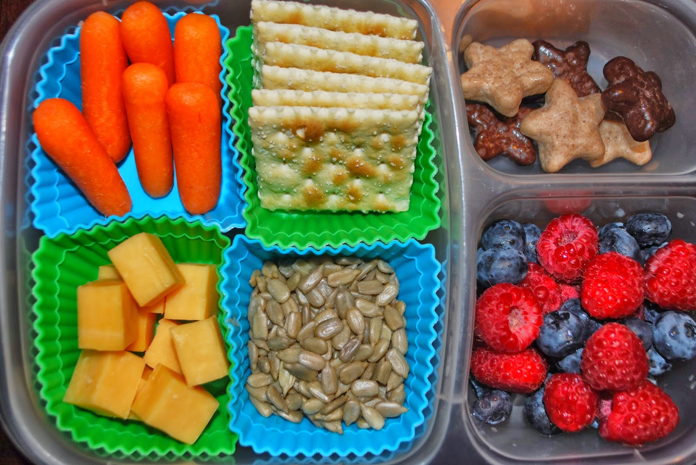
Храната
На обяд децата ще могат да избират своето място за хранене между столовата вътре и беседката в овощната градина. Храната – вкусна и здравословна - ще бъде приготвена от био продуктите, отглеждани в училищния двор, в който и те сами ще са помагали - според силите и желанието си.
За нас
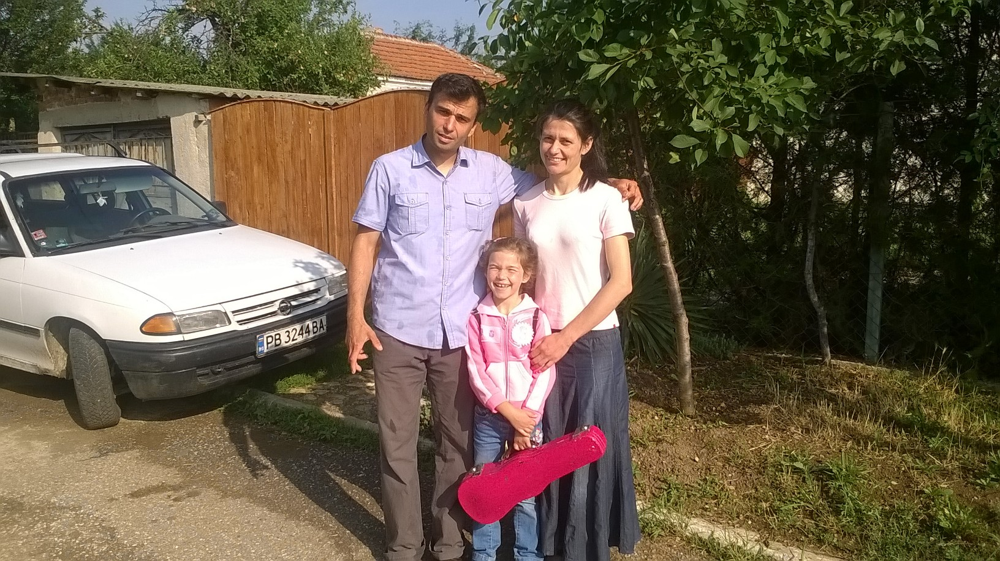
Семейство Домбазян
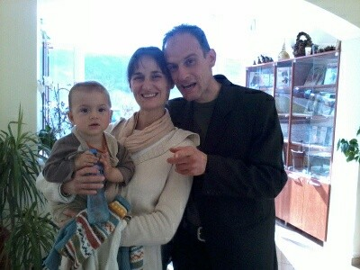
Семейство Тачеви
Ние сме Татяна и Петър Тачеви. Преместихме се от Пловдив в село Медово през 2011 година. Купихме къщата през 2007 година. Водеше ни Божията вест за напускане на големите градове. Впоследствие осъзнахме, че Бог е дал още много вести, касаещи личния ни живот, както и мисията на църквата. Една от тях е вестта за грижата за децата ни и запазването им от светската поквара. Важна част от правилното възпитание е училището, което в наше време се е превърнало в опасно място за физическото и моралното здраве на нашите деца. Благодарим на Бога, че имаме възможност да му служим по много начини. Най-важният от тях е да възпитаваме деца
за Божия слава.
Участваме в проекта „Обичано дете” почти от началото и се надяваме, че ако Бог го е започнал, той е силен да го завърши, стига да не Му пречим. Вярваме, че Той ще благослови всеки, който взема присърце Божиите институти: санаториуми, ресторанти, магазини, училища, телевизии, издателства!
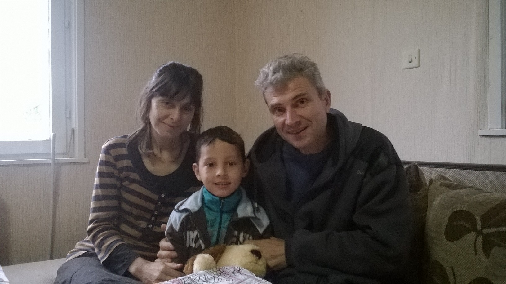
Семейство Петрови
Ние сме семейство Петрови от град Русе. В края на 2014г. решихме да си осиновим дете. Загрижени за неговото възпитание и образование, ние започнахме да търсим имот сред природата и училище, в което детето да бъде запознато не само с учебната програма, но и с християнските ценности. Молихме се и Бог ни посочи село Медово, където се строи такова учебно заведение и след като в съседно село намерихме подходящ дом, се установихме тук. С желание да помогнем за изграждането на училището и в процеса на обучение, тъй като съругата ми е с дългогодишен учителски стаж и обича децата и Бога.
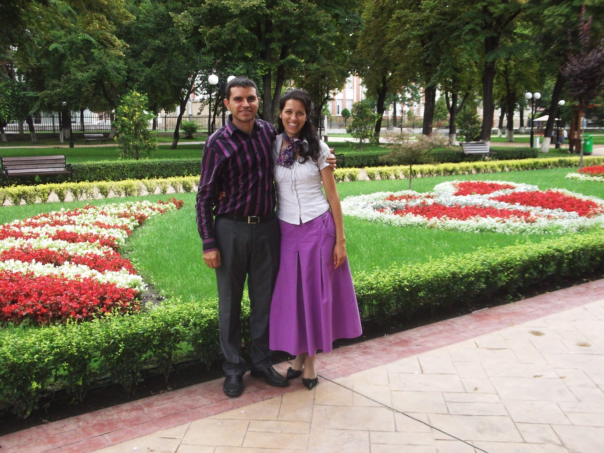
Семейство Маринови
Ние сме семейство Мариана и Димитър Маринови. Скоро след нашата сватба Бог насочи умовете ни към вестта за напускане на градовете. Продадохме апартамента си в Пловдив и си закупихме къща в село Медово. Вече тук разбрахме от Духа на Пророчеството за Божия план за създаване на институции за спасение на души - като проекта "Обичано Дете". Правилното възпитание и обучение е въпрос от спасително значение! Предимство на проекта ще бъде и това, че скоро в близост до него ще бъде открит микро здравен център - проектът, който Бог вдъхнови съпругата ми и мен да започнем. Там децата ще могат да се запознаят на практика с Божията програма на изцеление. Вярваме, че училище "Обичано Дете" скоро ще отвори врати. Амин!
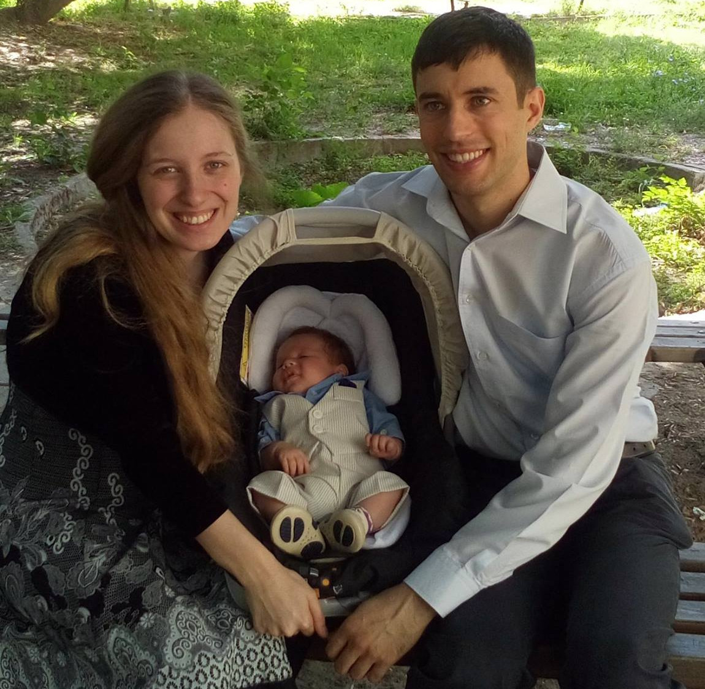
Семейство Пейчинови
Ние сме семейство Вили и Митко Пейчинови. Винаги сме искали да живеем извън големия град - по-близо до природата и нейния Създател и по-далеч от шума, суетата и сивотата на града. Сега вече и като родители ние искаме да отгледаме децата си във възможно най-добрата за тях среда. И изучаването на Духът на пророчеството ни насърчаваше в това нашето решение.
И така след няколко години на обикаляне, търсене и много молитви почувствахме, че Бог ни посочва село Медово. Закупихме си място в единия край на селото и сега нямаме търпение да приключим със строителните дейности и да се нанесем в новия си дом.
Ние подкрепяме проекта на училище "Обичано дете", защото вярваме, че това ще е една голямо благословение за много деца и за техните родители.
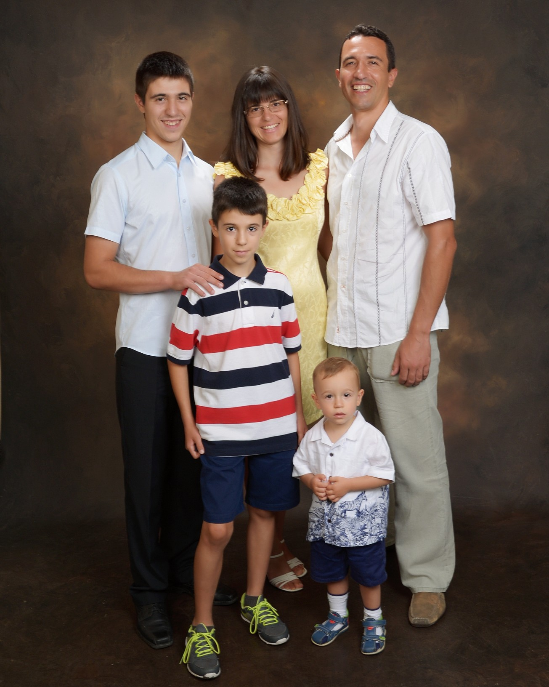
Веница Ангелова
Казвам се Веница Ангелова и живея в град Пловдив. Като майка на три деца - две от които посещават обществено училище - искам да споделя огромното си желание моето трето малко дете да учи в училище "Обичано дете".
За душите на децата ни се води борба и аз виждам как те са атакувани ден след ден от средата, в която учат, и от теориите, които изучават в училище, противоречащи на християнската ни вяра. Вследствие на което умовете им се объркват ден след ден, а точно в тази възраст се изгражда тяхната ценностна система, която не е утвърдена като при възрастните. У дома ги наставляваме в истината, а когато отидат в училище им се преподават уроци, съдържащи лъжа. Не поставяме ли децата си в капан? И после самите ние страдаме като наблюдаваме последиците - в какво се превръщат децата ни и колко много подражават на света и неговите обичаи! Дали си струва да рискуваме тяхното спасение?
Досега в България не сме имали привилегията децата ни да учат в училище, което издига на почетно място Божиите принципи. Ще се възползваме ли от изобилните благословения, които Бог желае да дари на нашите деца и на нас - техните родители - чрез училище "Обичано дете"?
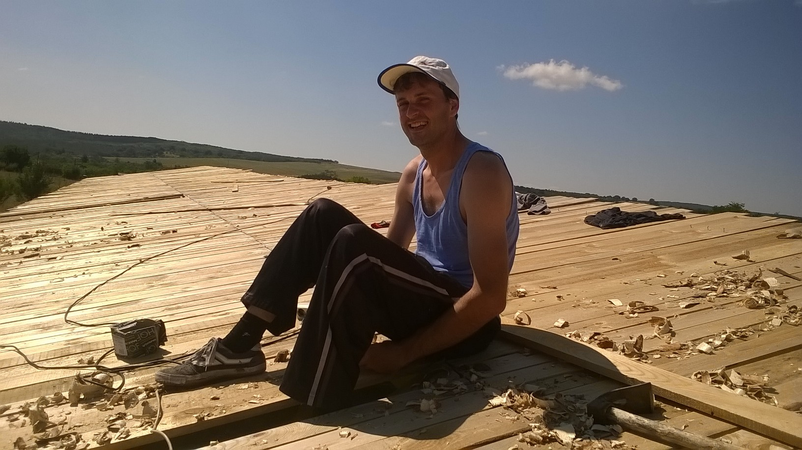
Стоян Стоянов
Казвам се Стоян Стоянов и вярвям, че Бог иска да има много такива училища и с радост бих помагал за изграждането им.
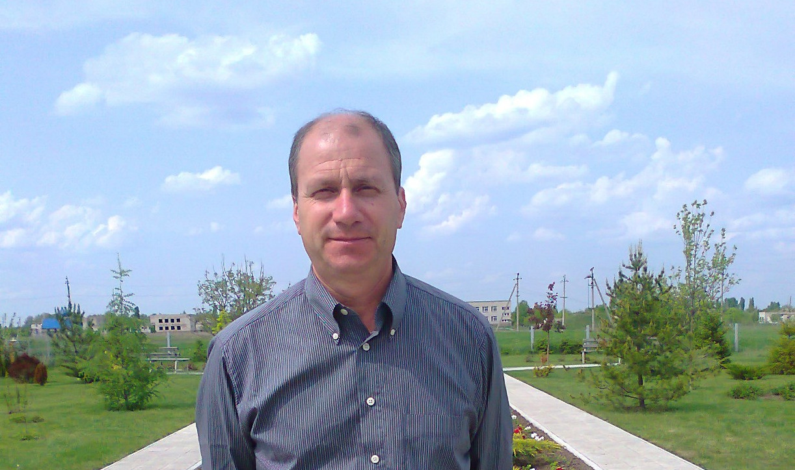
Жан Тачев
Казвам се Жан Тачев на 53г. съм и съм член на ЦАСД град Пловдив. С голяма радост Бог ме мотивира да участвам за основаването на първото ръководено от адвентисти училище за деца в България. Бог обича децата и желае тяхното спасение, жизнено важно е да бъдат отделени от влиянието на света и поставени близо до природата. Въпреки, че моите деца са вече големи, аз осъзнавам нуждата от такъв учебен център. Аз подкрепям това начинание и вярвам, че Бог също го подкрепя с водителството на Святия Дух. Подкрепете го и вие!
Напредъкът
През изминалите няколко години виждаме как с Божията помощ и с помощта на много съмишленици проектът за училище продължава да израства. Десетки души отвориха сърцата си и посветиха на тази благородна кауза доброволен труд, други дариха средства, а много други се молят за проекта.
Направено
- Закупено е мястото
- Поставена е ограда
- Насадени са овошки
- Изградена е металната конструкция на сградата
- Завършен е покрива
- Завършени са стените
В момента
Предстои скоро
- Да се поставят прозорците и вратите
А тук можете да прочетете повече за историята на проекта.
Адвентистите и село Медово
Преди около 25г. подбудени от Божието слово чрез дадените вести за излизане от шумните и мръсни, суетни и неморални градове, втория по големина в България град - Пловдив - намалява с няколко семейства. Тази не малка група адвентисти с много молитви и упование в Бога се установяват в едно красиво, чисто и спокойно място. Заобиколено от хълмове, планини, реки, гори и поля. Птичите песни вместо шума на автомобили, аромата на рози и билки вместо вместо димът на заводи и коли, по-близо до Божиите творения и по-далеч от човешките, подобно на Авраам изправени пред множество въпроси и неизвесности, но с доверие и упование в Божието водителство, те напускат бащините си домове. Лишенията и трудностите каляват вярата и характера им и с много молитви закупуват по парче земя. Някои се отказват, но повечето от тях полагат основите не само на новите си домове, но и на нов живот по-близо до Бога и по-близо до небето. Така село Медово им става втори дом. Скоро приемат вярата и няколко местни семейства, което полага основите на бъдещата църква.
Историята се повтаря
Но историята след около 15 години пак се повтаря. В края на 2006г. няколко млади семейства четат, молят се и търсят места за новите си домове, подобно на първите. След около една година обикаляне и дори капариране на имоти тук и там, Бог затваря вратите, като че ли ги насочва на другаде. Това другаде се оказва за тях не знайно къде, но за Бога знайно - пак село Медово. Което е станало още по-спокойно и тихо поради стремежа на повечето хора към града. Това място става обект на молитви и множество огледи и поставя началото на една нова вълна напускащи града млади адвентни семейства, която продължава и днес.
Подготовка - обучение и насърчение
Бог ги подбужда и те четат и се молят Той да ги употреби в две насоки - образование и здравно мисиониране. Заедно и по отделно посещават различни наши институти - включително и на хиляди километри - на обучения и лагери, на които Бог им показва как чрез Неговото водителство Той може да върши чудеса за децата и възрастните. През 2011г. едни от първите млади преселници в село Медово пътуват заедно с други братя за Хиргилия, където ще се провежда лагер на OCI. Преди това са се молили и питали какъв е Божия план за малкото им детенце, за тяхното служене, и изобщо къде трябва да са децата на адвентния народ? Там слушат много опитности, запознават се с доктор Мурашан и неговата съпруга, чрез които Спасителят е положил началото на едно малко адвентно училище - от само 4 деца. Но Бог благославя трудът им за изгражданато на характера и образованието на малките деца и други семейства също изпращат децата си. Междувременно наши братя от САЩ помагат и сега имат сграда за 120 деца, която е абсолютно пълна. И училищният автобус циркулира в села и градове да събира всеки ден децата на Исус при Неговите нозе... "Оставете дечицата да дойдат при Мен..." Слава на Бога!
В търсене на подходящо място
Връщайки се от там споделят чутото и видяното в Румъния и препрочитат многократно вестта от свидетелства т.6 стр.166 - "Излезте от големите градове, колкото може по-бързо. Основете църковни училища.", "Работете така, както бихте работили за спасяването на собствения си живот ..."
Подкрепени от някои родители, живеещи в града и готови да изпращат децата си в Божие училище, за да изградят Христоподобен характер, и заедно с молитвите и подкрепата на други братя, те търсят в продължение на няколко месеца място за първото училище в България с преподаватели адвентисти, обичащи Бога и децата. Обикалят с коли и колелета и се молят Той да посочи мястото.
Мястото, което - както е писано - трябва да е просторно, чисто, тихо и спокойно, с чист въздух и красива природа, където малките нозе ще тичат свободно, наблюдавайки красивите пейзажи, говорещи им за Божията любов и грижа. Място, където има и други вярващи, но място различно от града! Търсят, гледат, и все нещо от гореописаното липсва. Но има едно място, което като слепи все още не виждат. На 300 метра от тях, извън селото им. Бивш бригадирски лагер, с готови основи за сгради, с канализация и пътища, 7000 кв.м. земя заобиколена от планини и хълмове, гори и поля, жита и слънчогледи, потчета и реки, и в далечината няколко къщи, повечето от които сега са на млади адвентни семейства. Което покриваше всички условия, посочени от нашия грижовен Баща.
Бог убеждава хората
До тук добре, но властите обявиха с усмивка: "Мястото е държавно и ако местните жители - около 100 човека - не са съгласни, не можем да ви кажем цена, нито да обявим търг. Съжаляваме, довиждане!"
Но Господ е казал на своите "Боят не е ваш...". Бог подейства и ни мотивира да не се отказваме, а да съберем подписка от хората - "ЗА" или "ПРОТИВ" са да се продаде мястото за училище. Една жена от местните жители набра текста на печатната си машина. И сега Господ трябваше да подейства.
Много молитви бяха отправени. "Господи, ако не е това мястото, или ние не сме хората, молим Те - затвори вратата, но ако ли не - отвори я широко! Ти знаеш и можеш всичко."
Беше уникално! Святият Дух бе убедил хората и за по-малко от 24 часа се подписаха всички - само двама отказаха - и когато кметицата видя подкрепата и тя самата се подписа и се обади в общината с думите: "Имат събрана подписка от почти 100 човека и аз също се подписах." Така се задвижи процедудата за продажба на търг. Слава на Бога!
Пари от непознат
Само за участие в търга трябваха 2000лв. а налични имахме около 500лв. Но онова, което за нас е невъзможно, за Всемогъщия е твърде лесно. Помолихме се и отидохме да поискаме на заем от един приятел. Него обаче го нямаше, а срока ни притискаше. Тогава Бог ни насочи да питаме негов приятел къде е той. Почти непознат за нас човек, пък и ние за него, той ни попита: "За какво са ви тези 2000 лева?" След като му разказахме на кратко, той каза: "Изчакайте малко." И след няколко минути се появи на вратата с една пачка с пари и с думите: "Когато имате възможност, тогава ще ми ги върнете."
Бяхме много развълнувани от поредното Божие чудо! Почти непознат светски човек бе употребен, за да се укрепи вярата ни в Този, за когото няма нищо невъзможно!
"Справяне" с конкуренцията
Но скоро след това дойде обезкуражаваща вест - местен богаташ бил казал:
"Аз ще го взема това място!"
И по човешки нямаше какво да го спре. Отново споделихме поблема с други братя и сестри и с общи молитви търсехме решение от Бога - сами не можехме нищо да направим.
Няколко дни след това един голям джип спря до нас, отвътре се показа същия човек и с много любезен глас ни каза: "Вземете го мястото, аз няма да участвам."
Слава на Бога!
Чудо в последния момент
Скоро след това се проведе търга и наистина - нямаше други кандидати. Но дойде още по-големият изпит - в срок от 30 дни трябваше да внесем останалата част от сумата - 22000 лева, а имахме точно нула лева. Молитвите ни бяха, ако е Неговата воля, да подбуди братя, сестри и приятели да дадат временно нужната сума, докато продадем едно свое малко жилище в града, с което после да им върнем средствата. Питахме, молехме се и от ден на ден се отчайвахме. До последния ден бяхме събрали само 6000 лева.
Казахме си: "Ако Той има план, нека да го осъществи." Беше около 12:30 на обяд, когато решихме да направим последен опит от човек на човек. И чудото почти стана, сумата скочи от 6 на 18 хиляди, но уви - вече беше станало 17:00ч. и недостигаха не 4, а 4000 лева! Но Бог не беше приключил - звънна телефона: "До къде стигнахте? Една наша сестра току-що даде 4000 лева. След няколко минути ти ги нося." Боят е Божий! Слава да бъде на Него!
Но предстоеше още едно изпитание. Служителката в банката заяви, че няма да има достатъчно време да извърши превода - оставали само 15 минути от работното ѝ време, можела на другия ден да ни обслужи. Но след като ѝ обяснихме, че утре ще е късно за нас, тя се съгласи. Слава на Бога!
Всичко изглеждаше добре, но противника, знаейки какви резултати би имало в бъдеще едно такова място, правеше всичко, за да не може да стане банковия превод. И все пак, в 17:30 ч. мястото за училище беше факт - благодарение единствено на Божията намеса!
Проекта за сградата
Докато чакахме средствата, започнахме да ограждаме парцела, когато един ден звънна телефона на брата, с когото монтирахме оградата. Сестра му, светска жена, го попита: „Какво правиш?” А той отговори: „Строя училище на детето си!” А тя възкликна: „Какво правиш?!?”
Междувременно Бог мотивира братя от друг проект в България да дарят средства за проектирането на сградата. Но врагът не спеше и проекта бе върнат - с 9 нередности! Това ни срази. Нямахме и стотинка да платим на проектантите за корекциите, пълна безизходица по човешки. Но Той казва: "Аз Съм Господ и няма друг".
След 3 месеца звънна телефонът и архитектът, движещ проекта за сградата, каза: "Къде си? Не мога да те открия! Ела да си вземеш проекта, коригиран и одобрен." Тогава му отговорих: „Нямаме средства да Ви платим." А той каза: "Не се притеснявай!" - каза той. А пък бяха проектирали допълнително още около 150 кв.м. и коригирали 280 кв.м. за 0,00 лв! Слава на Бога!
Връщане на заемите
Продажбата на малкия имот в града се бавеше, но хората, услужили със средства, много търпеливо ни изчакаха цяла година. Беше много голям изпит на търпение и упование в Неговата сила. Пс. 34:7 "Ангел Господен се опълчва около боящите се от Него и ги избавя". Той наистина ни избави! Бог осъществи и продажбата на малкия имот в града и върнахме на хората средствата.
Заедно на строежа
С останалата сума от 15 000 лв. започнахме с молитва да издигаме металната конструкция на сградата - 5 класни стаи за по 8 деца в клас, учителски, директорски и лекарски кабинети, котелно, столова, кухня и физкултурен салон. През лятото на 2013 година Господ сигурно беше много радостен, защото за около месец почти 20 човека се събрахме като един под окървавеното знаме на нашия Господ. Почти всички бяхме от местната църква, но имаше и от други места. Някои братя отвориха домовете си за доброволците. Едно семейство приготвяше храната, друго даваше ток. Дойдоха и специалисти заварчици - Бог беше предвидял всичко - "само стойте и гледайте".
Не че липсваха трудности. Беше много горещо, вода липсваше в някои от домовете, но никой не се оплакваше. Беше изпратен от Исуса един възрастен брат, работил на кораби, който ни беше голямо насърчение с бодрия си и весел дух, позитивни мисли и разкази. На два пъти падаше тежко желязо от повдигащия механизъм на сантиметри от него, но Господ го запази. Благодарим на Него! "Не бой се, защото Аз съм с теб..." - Исая 41:10. Така след един месец работа заедно 15 тона желязо си дойде на мястото - скелета на сградата.
Отново Бог убеждава
Последва една дълга пауза от 12 месеца без средства. Молитвите ни бяха: „Ти, Господи, започна - Ти довършѝ делото Си! Ние сме нищо без теб.” Пс. 34:5 "Погледнаха към Него; и светнаха [очите им], И лицата им никога няма да се посрамят."
Една вечер звънна телефонът и купувачът на нашия малък имот в града каза: „Разбрах, че продавате и другата боксониерка?”. Зарадвахме се. Нотариусът и купувачът обаче се скараха за размера на нотариалните такси и купувачът реши да се откаже. Бяхме изненадани, но не се отчаяхме. Той има хиляди начини да действа и отговора на молитвите дойде. След няколко дена купувачът звънна и каза, че ще е на загуба, но все пак ще закупи апартаментчето.
Слава на Бога! Той извърши тази продажба!
Отново на работа - и млади, и стари
В края на 2014 година имахме средства да продължим, и когато се запролети, започнахме работа. Бог подбуди още няколко млади семейства с деца да напуснат градовете и да са в близост до бъдещето училище. Те също се включиха много активно в работата кой с каквото може. Дойдоха отново и братя да помагат от Пловдив, Варна, Русе и Велико Търново, като някои от тях прекараха дълги месеци далеч от родните си места в служба на Бога тук. Имаше съвсем млади - като тийнейджъра, който вярваш, че двете му по-малки братчета ще могат да се учат на това красиво и тихо място. А един от най-възрасните местни братя - на 83 години - почти всеки ден беше с нас и работеше почти наравно с нас!
Божията грижа продължава ... до века!
Сега вече имаме сграда с покрив и полуготови таван външни стени и таван. Но преди три седмици, в началото на ноември 2015 г. разбрахме, че средствата са отново на изчерпване. И отново много молитви бяха изречени. "Издигам очите си към хълмовете от където иде помощта ми. Помощта ми е от Господа, който е направил небето и земята." И буквално след един ден получихме две телефонни обаждания от различни места по света, на хиляди километра от тук! Наши братя искаха да помогнат със средства.
Кой им беше казал за изчерпването на средствата?! Кой ги беше мотивирал да даряват?! Кой беше Този, Който отвори сърцето на един човек, който ми каза: "Трябва да спрем някъде да си поговорим по един въпрос." "Не може ли и в движение?”- заявих аз. След няколко минути спрях автомобила принудително, защото той сподели: „Разбирайки окаяното състояние на автомобила, който 10 години ти е служил вярно, реших да даря 2000 лв. за автомобил. Бих дал и повече, но не мога, защото нямам повече." Аз онемях и спонтанно спрях стария опел. Почувствах милостта и прощението на Бога в такава голяма мярка и че ние въобще не сме заслужили това. Каква любов! Да бъде слава на Неговото име!
Насърчаваме ви, братя и сестри, да станете и да градите за Господа и във вашите райони. Защото Бог е този, който работи заедно с всички нас! Амин!

Account Login